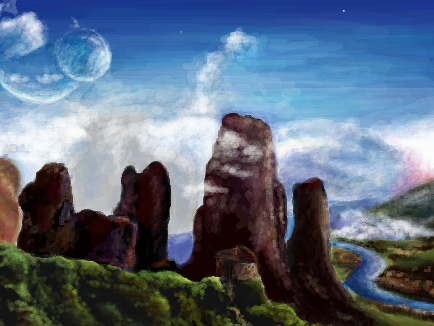
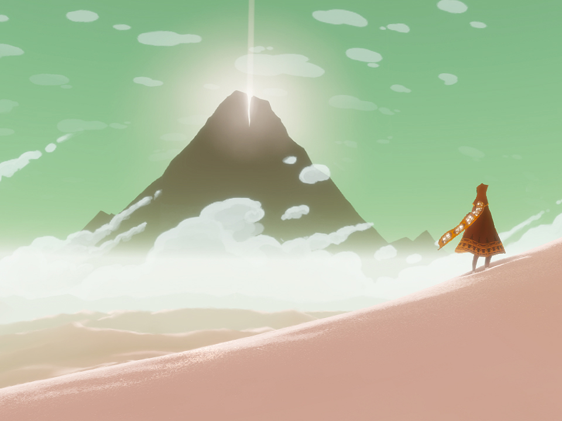

This was my term project for 15-112, Fundamentals of Programming. I created an app that allowed a user to record a piano sample, and then transcribed that sample onto sheet music. I used numpy and scipy to take fast fourier transforms, and wrote my own beat, polyphony and key signature detection algorithms.
This project was an attempt to mitigate the frustration my rudimentary transcription skills at the time caused me. I would often think of a melody in my head, only to be unable to play it in real life. It was also inspired by my love of music, and an exploration of how computer science could be used to integrate both artistic and technical elements.
REPMAN
This is a wristband that, given workout specifications, will automatically tell you when you are done with a set, when you are with an exercise, and when you need to start again. It does this by counting the number of reps you have done after you press the start button, vibrating when you finish, and vibrating again after your rest period is over. It communicates wirelessly via a light blue bean. It detects reps by first smoothing accelerometer data, and then using a peak detection algorithm to detect when a rep has been done.
This is inspired by how counting reps, and keeping track of rest periods, is often an annoyance for athletes. The market is currently flooded with products that require needless amounts of user interaction. Thus, we sought to create a simple, low-cost device that would have at least the same functionalities as many currently existing products, without as much overhead.
SMARTCAN
A project created at PennApps Winter 2015. We created a trash can capable of sorting between recyclable and non-recyclable items. A person would scan a QR code on a garbage item, or use Google Glass to scan the QR code. The phone or Glass would then send a signal to the trash can. When the item is thrown out, the trash can would then dump it into either the recyclable section, or the rubbish section. This was built with an Intel Edison, node.js, laser-cut materials, a servo motor, and iOS.
We were more concerned about the idea behind this project than the execution. We imagined a future where smartcans were ubiqituous, and, as such, one would not have to sort between recyclable and unrecyclable items. As such, the world would be one step closer to being green.
SONNETIFY
A project created for 60-223, Intro to Physical Computing. A friend and I created a midi synthesizer that, after playing a few notes, would start to play along with you. We made our own pressure sensors, and used an arduino as a controller. The actual synthesizer was made of laser-cut wood and acrylic. The generated notes were made from pre-programmed chord progressions, and a markov chain.
This was intended to be a children's toy. Children have wondrous imaginations, but little formal training in the world of music. This was intended to bridge the gap between childrens' imaginations and their ability to execute the music they may be hearing in their heads.
HEATTWEET
A project created at HackPrinceton Fall 2014. We created a heatmap that plotted tweets in real time on a map. Upon hover, the content of the tweet could be viewed. Tweets could also be searched for by keyword. This was built using bare HTML/CSS/JS/PHP, with some help from Rails.
We were curious as to what kind of tweets would show up, and to the kinds of tweets that would show up at certain times during the day. For example, during the early morning hours, the search for coffee yielded many results, while later in the morning, the keyword brunch was very popular.
ROSE
A flower I drew during my last year of high school. This is perhaps the most ambitious digital art project I have attempted. I tried to integrate the rose with the pure black background, to make it appear as if the rose was emerging from the darkness.
This was drawn in Photoshop using a mouse and pencil tool.
NUJABES TRIBUTE
A tribute to my favorite musical artist, Nujabes.
Nujabes has the ability to momentarily make you feel like you're flying, drifting above all the things that ordinarily bind you to reality. This was my attempt to visually convey that feeling.
This was drawn in Photoshop using a mouse and pencil tool.
CRIMSON STRANDS
A digital piece I drew of a good friend. This was the first piece I drew where I did not attempt to be photorealistic. Instead, I sought to explore lighting and duotones, and thus purely used shades of red and blue.
This was drawn in Photoshop with a mouse.
EYES ON ME (COVER)
A cover of Eyes On Me, from Final Fantasy 8.
The Final Fantasy series has long been one of my favorites. Although the gameplay can be lacking, the story, artwork and music make each game more than a worthwhile experience. Eyes On Me, a ballad that plays after the climax of Final Fantasy 8, is one of the most beautiful songs in the series, and also one of the most fun to play.
This was played on my Yamaha P115, and recorded into Garageband.
JOURNEY (COVER)
A cover of Nascence, from the game Journey.
Journey is the most beautiful, most impactful gaming experience of my life. The game is a roller coaster, taking you through both ecstasy and crippling fear. This is a cover/improv over the opening song, and my attempt to do the game justice. It is nowhere near good enough to do the game justice, but I plan on recording many more renditions.
CONTACT
ABOUT
PROJECTS
RESUME
Anatol
Liu
I am a current sophomore in the School of Computer Science at Carnegie Mellon.
This is a place where I keep all the things that I've been working on. Feel free to look around at your leisure.
PIANOSCRIBE
tech
REPMAN
tech
SMARTCAN
tech
SONNETIFY
tech
HEATTWEET
tech
ROSE
art

NUJABES TRIBUTE
art
CRIMSON STRANDS
art
EYES ON ME (cover)
piano

NASCENCE (cover)
piano
Ask me something or just chat. I'm always free to talk.